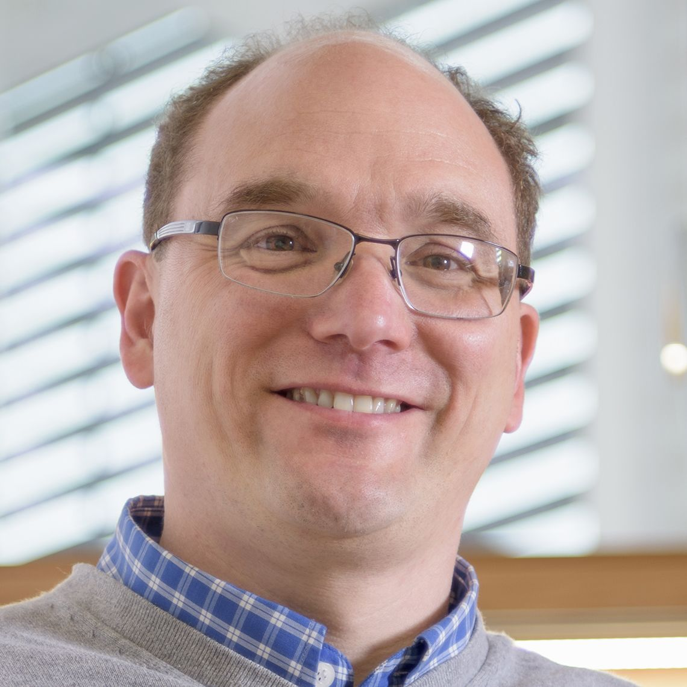
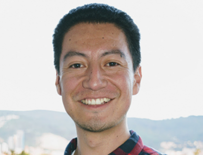

Speaker:
Gerhard Hummer, Professor, Max Planck Institute of Biophysics. (Confirmed)
Speaker Bio:
Gerhard Hummer studied physics at the University of Vienna, Austria. He received his PhD in 1992 for work at the University of Vienna, Austria, and the Max-Planck-Institute for Biophysical Chemistry, Göttingen, Germany. He joined the Los Alamos National Laboratory (NM, USA), first as a postdoctoral fellow (1993-1996) and then as a group leader (1996-1999). In 1999, he moved to the National Institutes of Health (MD, USA), where he became Chief of the Theoretical Biophysics Section, and Deputy Chief of the Laboratory of Chemical Physics, NIDDK. In 2013 he was appointed as scientific member and director at the Max Planck Institute of Biophysics in Frankfurt, Germany, where he heads the Department of Theoretical Biophysics. Since 2016, he is also Professor of Biophysics at the Goethe University in Frankfurt.
Gerhard Hummer uses molecular simulations, integrative modeling, and theory to study the structure, dynamics, and function of biological systems at the molecular level. His current research focuses on membrane dynamics and remodeling processes in cellular homeostasis, autophagy, and viral infection. Gerhard Hummer is a Fellow of the American Physical Society (2005), a Senior Fellow of the Frankfurt Institute for Advanced Studies (2015), and a recipient of the Raymond and Beverly Sackler International Prize in Biophysics (2010) and the Nancy Nossal Scientific Mentorship Award at the NIH (2010).
Speaker:
Jens Rittscher, Professor, University of Oxford. (Confirmed)

Speaker Bio:
Dr. Jens Rittscher has been appointed as a University Research Lecturer in 2013 and he is the first joint academic appointment between the Institute of Biomedical Engineering and the Nuffield Department of Medicine. In particular his work supports the Target Discovery Institute and Ludwig Institute of Cancer Research. In addition to his research in the field of biomedical imaging, Jens Rittscher has worked extensively in the area of video surveillance, the automatic annotation of video, and understanding of volumetric seismic data.
Before coming to Oxford in 2013 Jens Rittscher led the Computer Vision Laboratory at GE Global Research in Niskayuna, NY, USA. He joined GE in 2001 after completing his PhD at the Department of Engineering Science at University of Oxford. During this time he was part of the Visual Dynamics Group led by Andrew Blake. He received his Diploma in Mathematics and Computer Science from the University of Bonn, Germany. Jens Rittscher held a position as an adjunct assistant professor at the Rensselaer Polytechnic Institute. He is a member of IEEE and acts as an elected member of the IEEE SPS Technical Committee on Bio Image and Signal Processing.
Talk Title: Computer vision opportunities for analyzing the spatial topography of gene expression in the human brain
Speaker:
Kristen Maynard, Ph.D., Lieber Institute,
Abstract: The spatial organization of the brain is fundamentally related to its function. Understanding complex brain disorders will require identifying cell types that make up the brain and ultimately linking functional correlates of individual cell classes with spatial topography. Emerging approaches like spatial transcriptomics (ST) can quantify RNA transcripts within tissue architecture (defined by histological images), thereby retaining both anatomical and transcriptome-scale molecular information. To further our understanding of gene expression within the context of the spatial organization of the human cortex, we used the 10x Genomics Visium platform, a novel barcoding-based transcriptome-wide ST technology that maps RNA-sequencing reads to specific positions on a histological image, to generate spatial maps of gene expression in the six-layered dorsolateral prefrontal cortex (DLPFC) of the adult human brain.: We show that Visium and its combined proteomics platform (Visium-IF) can identify gene expression with high spatial resolution within the architecture of the human cortex. We discuss computer vision opportunities for further integrating Visium gene expression and histology/fluorescence microscopy data for spatial and pathological registration of gene expression in the normal brain as well as the brains of individuals with complex brain disorders.
Speaker Bio:
Kristen Maynard, Ph.D. Kristen Maynard, Ph.D. is a Research Scientist in the Molecular Neuroanatomy Division at the Lieber Institute for Brain Development. She earned her Bachelor’s degree in Neuroscience at Bowdoin College and completed her Doctoral degree in Neuroscience at Yale University where she studied mechanisms governing cortical neuron development. Dr. Maynard received specialized training in translational research through the Yale Medical Research Scholars Program and joined the newly established Lieber Institute for a postdoctoral fellowship in biological psychiatry with Dr. Keri Martinowich in 2012. Using cell type-specific molecular profiling techniques in combination with circuit biology and systems neuroscience in mice, she identified novel links between gene expression, plasticity, and behavior in the context of chronic stress, fear regulation, aggression, and social behavior. She was recruited as a Research Scientist to advance novel methodologies and tools for studying gene expression with single cell and spatial resolution in postmortem human brain. In collaboration with her colleagues, Dr. Maynard conducted the first transcriptome-scale spatial gene expression studies in human cortex using Visium spatial transcriptomics technology. Her cross-species research program integrates circuit-specific studies in mice with cell type-specific molecular studies in postmortem human brain to identify novel mechanisms underlying psychiatric disease and addiction for the development of therapeutic targets.
Talk Title: Geometry of Life: MicroCT as a Foundation for Computational Organismal and Tissue Phenomics
Speaker:
Keith Chang, Ph.D., Pennsylvania State University.
Speaker Bio:
Dr. Keith Cheng is interested in making fundamental contributions to the understanding of genetic and molecular mechanisms involved in human biology and disease. The lab is interested in genetic aspects of human disease, use of model systems such as the zebrafish, contribution to web-based scientific resources and new, potentially high-throughput forms of 3D imaging.
Some of the Cheng lab's specific work is aimed at increasing understanding of the basis of phenotypic variability, particularly as it may impact cancer; basic mechanisms underlying the relationship between human skin pigmentation and skin cancer; contributing to web-based infrastructures for science, education and public service; and working toward a 3D derivative of histology that also allows the identification and characterization of all cell types but utilizes the computer to define slice angle, thickness, point of view and definition of tissues of interest. Obvious implications include automation of phenotyping, including diagnostics.
Talk Title: Image-based Cell Phenotyping with Deep Learning
Speaker:
Juan Caicedo, Ph.D. Broad Institute.

Abstract: Visual cell phenotyping is the characterization and quantification of observable cellular traits in images. Recently, cellular phenotyping has undergone a massive overhaul in terms of the scale, resolution, and throughput, attributable to the advances across electronic, optical, and chemical technologies for imaging cells. Coupled with the rapid acceleration of deep-learning based computational tools, these advances have opened up new avenues for innovation across a wide variety of high-throughput cell biology applications. In this talk, we will review applications where deep learning is powering the recognition, profiling, and prediction of visual phenotypes to answer important biological questions. As the complexity and scale of imaging assays increase to understand biological models, deep learning offers computational solutions to improve our ability for studying more precise details of cellular phenotypes.
Speaker Bio:
Juan C. Caicedo is a Schmidt Fellow at the Broad Institute of MIT and Harvard. He is pioneering the use of deep learning and machine learning methods to analyze microscopy images and high-resolution genetic data. He is also exploring reinforcement learning, a method of training algorithms to optimize biological experiments. He collaborates with the Cell Circuits and Epigenomics Programs and the Imaging Platform.
Caicedo received his Ph.D. in computer engineering from the National University of Colombia. He completed internships at Google Research, Microsoft Research, and Queen Mary University of London as a grad student. As a postdoctoral researcher at the University of Illinois at Urbana-Champaign, he studied object detection problems in internet scale image collections with deep reinforcement learning.
Speaker:
Berton Earnshaw, Ph.D. Recursion Pharmaceuticals (Confirmed)
 Speaker Bio:
Berton Earnshaw is a Machine Learning Fellow at Recursion, where he directs the company’s strategy in applying AI to the company’s multi-petabyte cellular imaging data. Berton earned a PhD in mathematics from the University of Utah, studying protein trafficking during memory formation, and was a postdoctoral fellow at the University of Utah and Michigan State University, where his research focused on nonautonomous master equations governing receptor kinetics. Berton then worked in various technical and scientific roles in industry, including CTO of Perfect Pitch, Director of Data Science and Operations at Red Brain Labs, and principal and senior scientist at Savvysherpa (acquired by UnitedHealth Group).
Speaker Bio:
Berton Earnshaw is a Machine Learning Fellow at Recursion, where he directs the company’s strategy in applying AI to the company’s multi-petabyte cellular imaging data. Berton earned a PhD in mathematics from the University of Utah, studying protein trafficking during memory formation, and was a postdoctoral fellow at the University of Utah and Michigan State University, where his research focused on nonautonomous master equations governing receptor kinetics. Berton then worked in various technical and scientific roles in industry, including CTO of Perfect Pitch, Director of Data Science and Operations at Red Brain Labs, and principal and senior scientist at Savvysherpa (acquired by UnitedHealth Group).